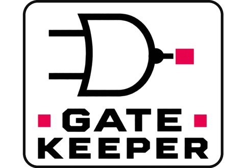

GATE
KEEPER
 فرانتاند و بکاندعلی نویدی | RomeoHosting
فرانتاند و بکاندعلی نویدی | RomeoHosting فرانتاندمبینا دواتگر
فرانتاندمبینا دواتگر سرگروه پروژهامیرحسین شهبازی
سرگروه پروژهامیرحسین شهبازی مدیر تبلیغاتابوالفضل رحیمی
مدیر تبلیغاتابوالفضل رحیمی دستیار تبلیغاتمتین میدانی
دستیار تبلیغاتمتین میدانی مدیر و استاد پروژهخانم مریم صادقی
مدیر و استاد پروژهخانم مریم صادقی
بازی معمای مدار منطقی: گیتها را وصل کن، سیمها را بکش و ماشین را بیدار کن.
بازی معمای مدار منطقی: گیتها را وصل کن، سیمها را بکش و ماشین را بیدار کن.
مرحلهی ۱: اولین گیت AND



GALLERYروی هر عکس بایست تا مدار روشن شود


0%در حال بارگذاری مدار…